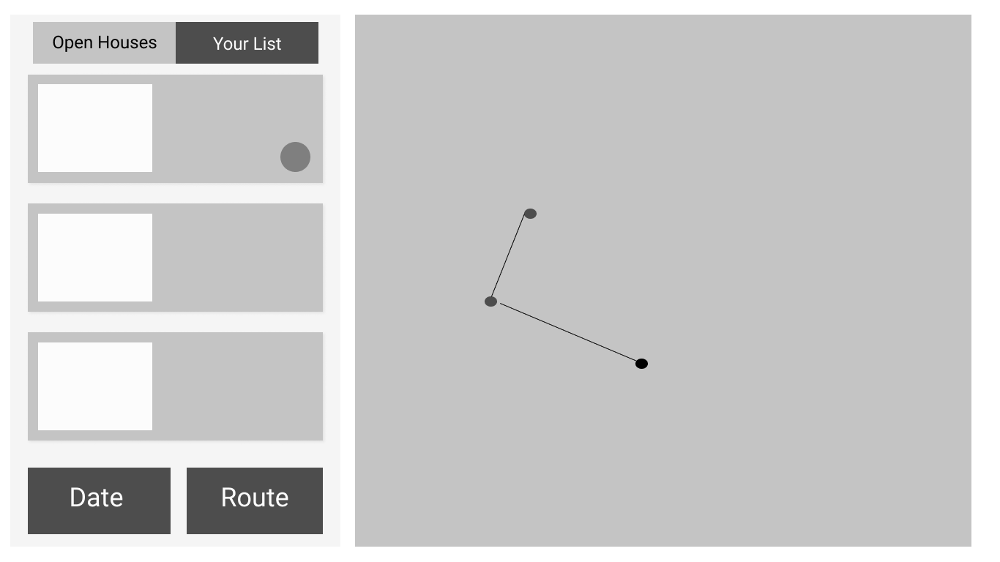

In an effort to make the home buying process more efficient, my team and I built a web application that allows users to search for open houses based on their personal preferences. For instance, a user can search for open houses in their area based on date and location. They can then optimize their route in a way that maximizes the number of open houses they can visit in a single trip. To build the web application they used HTML , CSS, and Javascript. For the route optimization algorithm, we used the Esri ArcGIS Javascript API.
Process
Sketch
Quick sketch of user flow and interface layout
Wireframe
After a user picka a date, house type, and price range, a list of result will display with their corresponding locations on the map. Users can add open houses to their "list" and select houses they would like to see the same day. The application will automatically generate the rout. Used Figma


Prototype
The animations of the list and the map synchronized, providing meaningful feedback. The feedback indicates that the website is generating routes, and shows the user the order to view these houses on both the list and the map.
Used Protopie.io